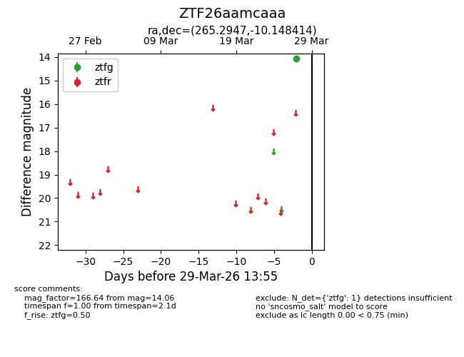
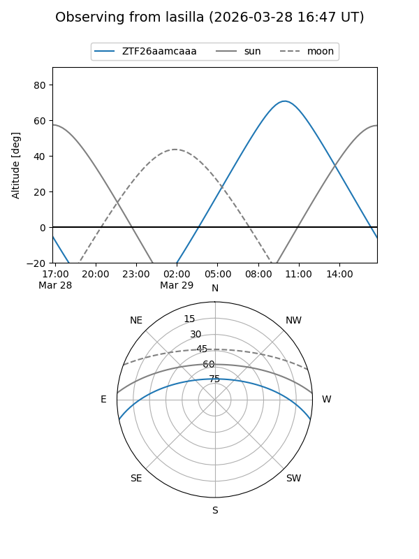
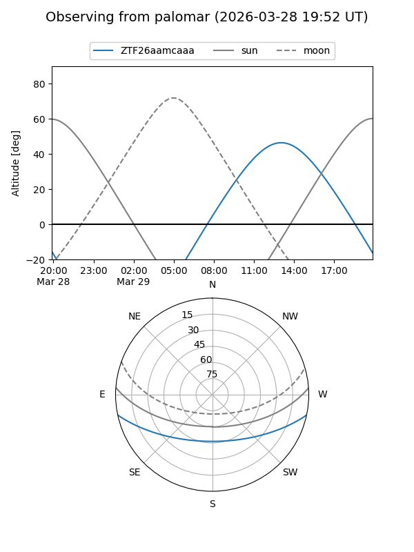

ZTF26aamcaaa
Target ZTF26aamcaaa at 2026-03-29 13:58
Aliases and brokers:
FINK: link
Lasair: link
ALeRCE: link
alt names
ZTF26aamcaaa (ztf,fink_ztf)
Coordinates:
equatorial (ra, dec) = 265.2947,-10.14841
equatorial (HMS+DMS) = 17:41:10.72,-10:08:54.29
galactic (l, b) = (15.6335,+10.60508)
Flags:
Photometry:
last ztfg=14.06
1 ztfg detections
Lightcurve

Visibility


Additional plots